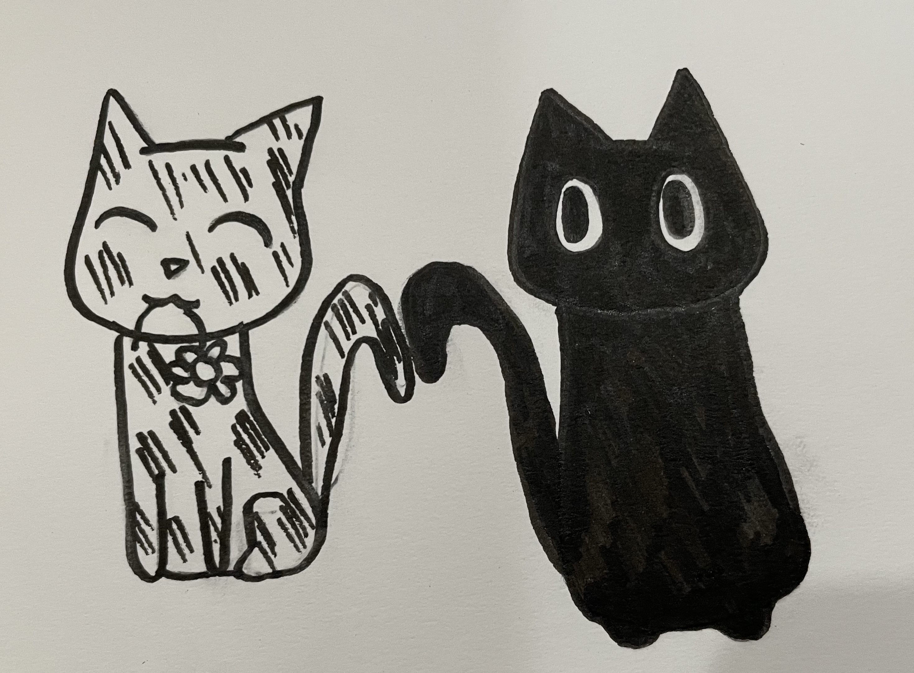
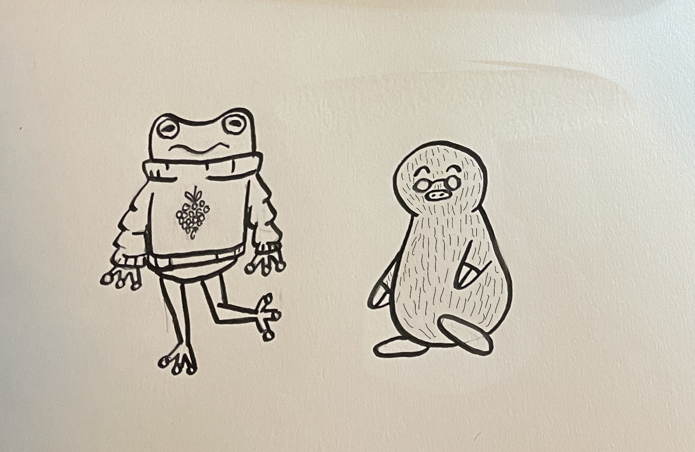

Distressed, Flora and Milo chase after the cat. They chase him until they come upon a clearing, where another cat waits. Flora and Milo watch as the first cat brings the daisy to his friend.
"Maybe we should just let him have it," says Milo. Flora, a little sad, agrees. They decide it's best to let the cat keep the daisy, as they wouldn't want to take it away from the other cat.
 Page 5.